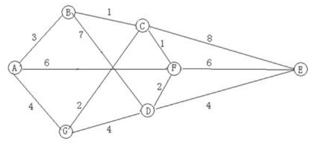

一、单项选择题（共 20 题，每题 1.5 分，共计 30 分；每题有且仅有一个正确选项）
| 1. | 以下哪个是面向对象的高级语言( )。 |
|---|
| 2. | 1TB代表的字节数是( )。 |
|---|
| 3. | 二进制数00100100和00010101的和是( )。 |
|---|
| 4. | 以下哪一种设备属于输出设备( )。 |
|---|
| 5. | 下列对操作系统功能的描述最为完整的是( )。 |
|---|
| 6. | CPU、存储器、I/O设备是通过( )连接起来的。 |
|---|
| 7. | 断电后会丢失数据的存储器是( )。 |
|---|
| 8. | 以下哪一种是属于电子邮件收发的协议( )。 |
|---|
| 9. | 下列选项中不属于图像格式的是( )。 |
|---|
| 10. | 链表不具有的特点是( )。 |
|---|
| 11. | 下列各无符号十进制整数中，能用八位二进制表示的数中最大的是( )。 |
|---|
| 12. | 下列几个32位IP地址中，书写错误的是( )。 |
|---|
| 13. |
要求以下程序的功能是计算：s=1+1/2+1/3+...+1/10。
#include <iostream>
using namespace std;
int main(){
int n;
float s;
s = 1.0;
for(n = 10; n > 1; n--)
s = s + 1 / n;
cout << s << endl;
return 0;
}
程序运行后输出结果错误，导致错误结果的程序行是( )。
|
|---|
| 14. | 设变量x为float型且已赋值，则以下语句中能将x中的数值保留到小数点后两位， 并将第三位四舍五入的是( )。 |
|---|
| 15. |
有以下程序
#include <iostream>
using namespace std;
int main(){
int s, a, n;
s = 0;
a = 1;
cin >> n;
do
{
s += 1;
a -= 2;
}
while(a != n);
cout << s << endl;
return 0;
}
若要使程序的输出值为2，则应该从键盘给n输入的值是( )。
|
|---|
| 16. | 一棵具有5层的满二叉树中结点数为( )。 |
|---|
| 17. | 有向图中每个顶点的度等于该顶点的( )。 |
|---|
| 18. | 设有100个数据元素，采用折半搜索时，最大比较次数为( )。 |
|---|
| 19. |
若有如下程序段，其中s、a、b、c均已定义为整型变量，且a、c均已赋值，c>0。s = a; for(b = 1; b <= c; b++) s += 1;则与上述程序段功能等价的赋值语句是( )。 |
|---|
| 20. | 计算机界的最高奖是( )。 |
|---|
二、问题求解（共 2 题，每题 5 分，共计 10 分；每题全部答对得 5 分，没有部分分）
| 1. |
把M个同样的球放到N个同样的袋子里，允许有的袋子空着不放，问共有多少种不同的放置方法？(用K表示)。 例如，M＝7，N＝3时，K＝8；在这里认为和是同一种放置方法。 问：M＝8，N＝5时，K＝。 |
|---|
| 2. | 如图所示，图中每条边上的数字表示该边的长度，则从A到E的最短距离是 。 |
|---|---|
|  |
三、阅读程序写结果(共4题，每题8分，共计32分)
| 1. |
#include <iostream>
using namespace std;
int main(){
int a, b, c, d, ans;
cin >> a >> b >> c;
d = a- b;
a = d + c;
ans = a * b;
cout << "Ans = " << ans << endl;
return 0;
}
|
|---|---|
| 输入：2 3 4 | |
| 输出：Ans= |
| 2. |
#include <iostream>
using namespace std;
int fun(int n){
if(n == 1)
return 1;
if(n == 2)
return 2;
return fun(n - 2) - fun(n - 1);
}
int main(){
int n;
cin >> n;
cout << fun(n) << endl;
return 0;
}
|
|---|---|
| 输入：7 | |
| 输出： |
| 3. |
#include <iostream>
#include <string>
using namespace std;
int main() {
string st;
int i, len;
getline(cin, st);
len = st.size();
for(i = 0; i < len; i++)
if(st[i] >= 'a' && st[i] <= 'z')
st[i] = st[i] - 'a' + 'A';
cout << st << endl;
return 0;
}
|
|---|---|
| 输入：Hello, my name is Lostmonkey. | |
| 输出： |
| 4. |
#include <iostream>
using namespace std;
const int SIZE = 100;
int main(){
int p[SIZE];
int n, tot, i, cn;
tot = 0;
cin >> n;
for(i = 1; i <= n; i++)
p[i] = 1;
for(i = 2; i <= n; i++){
if(p[i] == 1)
tot++;
cn = i * 2;
while(cn <= n){
p[cn] = 0;
cn += i;
}
}
cout << tot << endl;
return 0;
}
|
|---|---|
| 输入：30 | |
| 输出： |
四、完善程序(共2题，共计28分)
| 1. | （数字删除）下面程序的功能是将字符串中的数字字符删除后输出。请填空。 |
|---|
#include <iostream>
using namespace std;
int delnum(char *s){
int i, j;
j = 0;
for(i = 0; s[i] != '\0'; i++)
if(s[i] < '0's[i] > '9'){
s[j] = s[i];
;
}
return ;
}
const int SIZE = 30;
int main(){
char s[SIZE];
int len, i;
cin.getline(s, sizeof(s));
len = delnum(s);
for(i = 0; i < len; i++)
cout << ;
cout << endl;
return 0;
}
|
| 2. |
（最大子矩阵和）
给出m行n列的整数矩阵，求最大的子矩阵和(子矩阵不能为空)。 输入第一行包含两个整数m和n，即矩阵的行数和列数。 之后m行，每行n个整数，描述整个矩阵。 程序最终输出最大的子矩阵和。 比如在如下这个矩阵中： 4 4 0 -2 -7 0 9 2 -6 2 -4 1 -4 1 -1 8 0 -2 拥有最大和的子矩阵为： 9 2 -4 1 -1 8 其和为15 3 3 -2 10 20 -1 100 -2 0 -2 -3 最大子矩阵和为128 4 4 0 -2 -9 -9 -9 11 5 7 -4 -3 -7 -6 -1 7 7 5 最大子矩阵和为26 |
|---|
#include <iostream>
using namespace std;
const int SIZE = 100;
int matrix[SIZE + 1][SIZE + 1];
int rowsum[SIZE + 1][SIZE + 1]; //rowsum[i][j]记录第i行前j个数的和
int m, n, i, j, first, last, area, ans;
int main(){
cin >> m >> n;
for(i = 1; i <= m; i++)
for(j = 1; j <= n; j++)
cin >> matrix[i][j];
ans = matrix;
for(i = 1; i <= m; i ++)
;
for(i = 1; i <= m; i++)
for(j = 1; j <= n; j++)
rowsum[i][j] = ;
for(first = 1; first <= n; first++)
for(last = first; last <= n; last++){
;
for(i = 1; i <= m; i++){
area += ;
if(area > ans)
ans = area;
if(area < 0)
area = 0;
}
}
cout << ans << endl;
return 0;
}
|